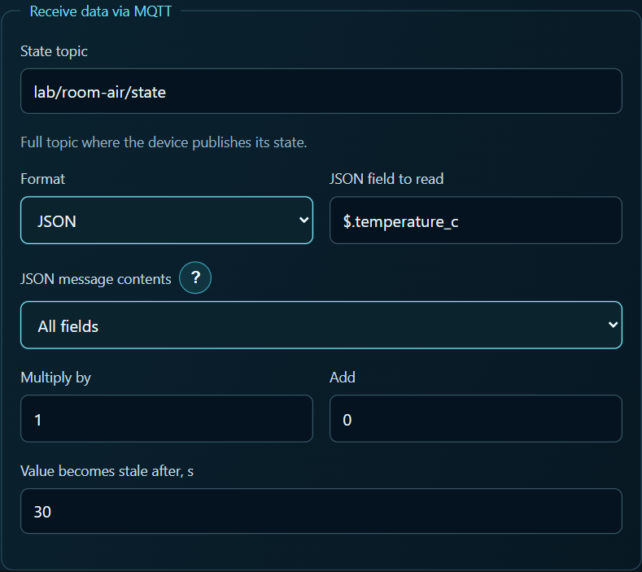

Build four dashboard cards from one MQTT topic
For a room sensor I wanted two gauges, one for temperature and one for humidity, with a history chart below each. Entering the topic and JSON path four times leaves four places to check when a chart stays empty.
In the RoomAir workshop the generator published {"temperature_c":22.0,"humidity_pct":49.6} to lab/room-air/state on a local broker. The next message still reported 22.0 °C, but humidity had dropped to 49.4%. That pair makes a quick check for both bindings.
Set up the dashboard
Start the generator, open MQTT search and select
lab/room-air/state. Pick$.temperature_cand save the binding as a temperature tag in °C. Save$.humidity_pctas a second tag in percent.
Enable history on both tags. Choose the same temperature tag for the temperature gauge and its chart. Do the same for humidity.
The supplied project records changes. On the second message the humidity gauge should drop from 49.6% to 49.4%, while the temperature gauge stays at 22.0 °C. An unchanged temperature does not need another sample in that history. The download includes the panel and a generator so you can try this without an ESP32. RoomAir workshop and downloads